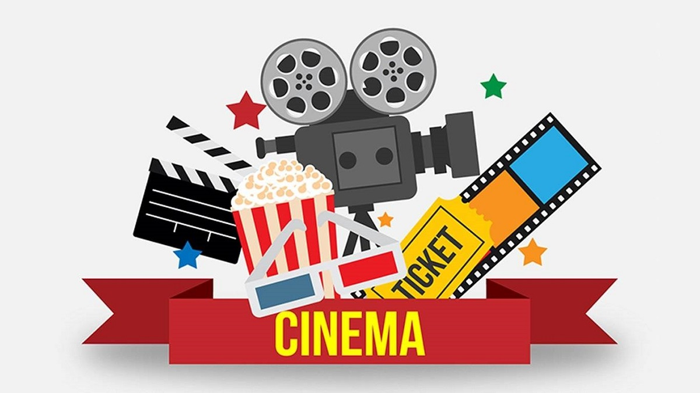
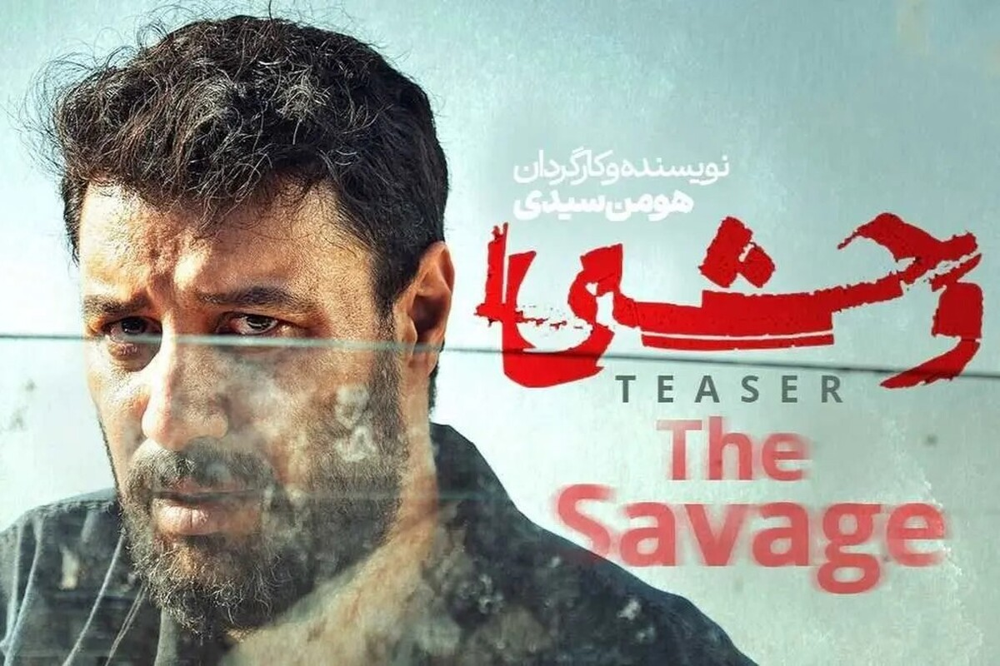
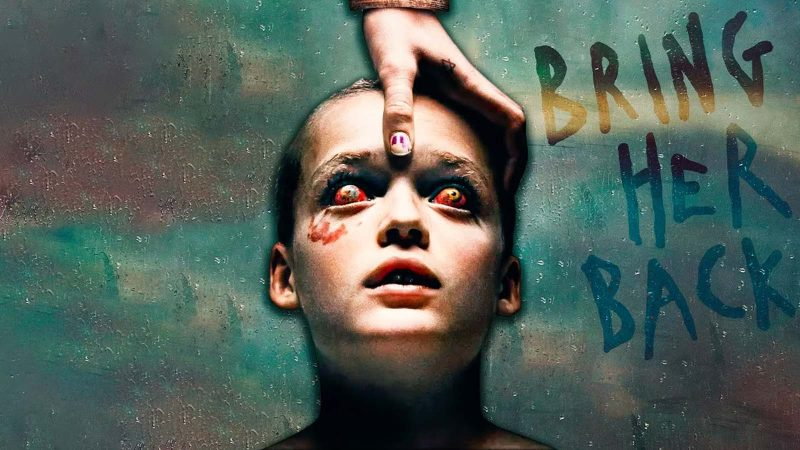
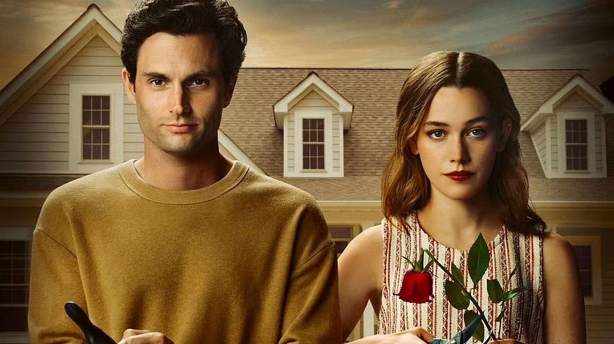

فیلم و سریال فقط قصه گفتن نیست؛ سفریه به جهان احساس، معنا و خیال. هر اثر پنجرهایه به تجربههای انسانی، از هیجان و عشق گرفته تا ترس و امید. در بخش فیلم و سریال، روایتهایی رو مرور میکنیم که ذهن رو درگیر و قلب رو همراه میکنن؛ داستانهایی که بعد از تماشاشون هنوز تموم نمیشن


سریال «وحشی» (The Savage) یک مینیسریال ایرانی در ژانر جنایی، درام و معمایی است که توسط هومن سیدی نوشته و کارگردانی شده و در سال ۲۰۲۵ از پلتفرم فیلمنت پخش شد. داستان حول محور داوود اشرف (با بازی جواد عزتی) میچرخد؛ مردی که پس از یک قتل تصادفی وارد زندان میشود و در جریان خشونتها و بیعدالتیهای محیط زندان، به تدریج دچار تحولات عمیق روانی و تاریکی میشود. این سریال با الهام از یک پرونده واقعی ساخته شده و تلاش دارد به بررسی پیامدهای خشونت، عدالت و هویت انسانی بپردازد. «وحشی» از بازیگران شناختهشدهای مثل نگار جواهریان، احسان امانی و علیرضا ثانیفر بهره میبرد که به فضاسازی دراماتیک و پرکشش اثر کمک میکنند. ساختار داستانی این سریال پرتعلیق، با لحظات تنشآور و پیچشهای شخصیتی، آن را به یکی از آثار برجسته و پرطرفدار شبکه نمایش خانگی ایران تبدیل کرده است. سریال هم در فصل اول و هم در فصل دوم ادامه پیدا کرده و با استقبال مخاطبان مواجه شده است، چون روایت تاریک و واقعگرایانهای از پیامدهای زندگی در جامعه و نظام کیفری ارائه میدهد
سال انتشار: ۲۰۲۵ امتیاز آی ام دی بی: ۷.۲/۱۰ اگر دنبال فیلم سینمایی ترسناک جدید هستید، او را برگردان، یکی از پرسروصداترین فیلمهای این روزهاست که سینمای استرالیا زحمت آن را کشیده. پایپر و اندی، خواهر و برادر ناتنیای هستند که والدین خود را در یک سانحه از دست دادهاند، اما تا سه ماه دیگر که اندی به سن قانونی برسند، مجبورند با یک سرپرست موقت زندگی کنند. زنی به نام لارا آندو را به سرپرستی میگیرد و به خانهای ایزوله در دل جنگل میبرد. اما از همان ابتدا، مشخص است که این خانه و این زن، مرموزند و این مسئله کمی خواهر و برادر داستان را دلنگران میکند. اما این زن چه مسئلهای دارد؟ آیا او عضو فرقهای عجیب است؟ چقدر هدفی که دارد حاضر است پیش برود؟ این فیلم ترسناک جدید ۲۰۲۵ که حسابی هم پرطرفدار واقع شده، پیشنهاد این روزهای ما به شماست.


اثر روانشناختی YOU، یکی از بهترین سریال های عاشقانه خارجی در یک دهه اخیر است. این سریال با تم روانشناختی و عاشقانه براساس کتابهای نویسندهای معروف با نام کارولین پکس تولید شده است. سریال تو روایتگر زندگی گلدبرگ، مدیر بسیار جوان یکی از کسبوکارهای معروف آمریکا است. او به عنوان مدیر یک کتابفروشی، به شکل ناگهانی و تحت فشارهای گوناگون در زندگیاش به جنایت و قتلهای سریالی روی میآورد! درواقع کمتر کسی فکرش را میکند که یک کتابفروش دست به قتلهای سریالی بزند؛ حتی خود شما با خواندن چنین ایدهای بدون شک بسیار تعجب کردهاید. در گیرودار قتلهایی که انجام میدهد، در دام ماجراجویی عاشقانه میافتد که باعث میشود تا در یک دوگانگی و کشاکش میان مرگ و زندگی قرار بگیرد.
| رتبه | نام فیلم |
|---|---|
| 1 | Project Hail Mary |
| 2 | The Odyssey |
| 3 | Avengers: Doomsday |
| 4 | Star Wars: The Mandalorian and Grogu |
| 5 | Moana (Live‑Action) |
| 6 | Supergirl |
| 7 | 28 Years Later: The Bone Temple |